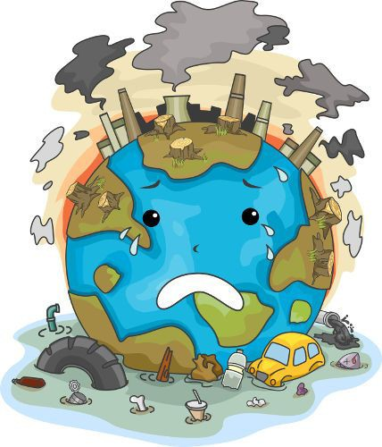

IMPACTO
El impacto del medio ambiente se puede observar en diversas áreas debido a la interacción entre las actividades humanas y los sistemas naturales.
1. *Cambio Climático*: El aumento de las temperaturas globales ha provocado cambios en los patrones climáticos, resultando en fenómenos como huracanes más intensos, olas de calor, sequías prolongadas y deshielo de los glaciares.
2. *Contaminación*: La acumulación de contaminantes en el aire, agua y suelo ha llevado a problemas graves de salud pública, como enfermedades respiratorias y cardiovasculares. La contaminación plástica también afecta la vida marina y los ecosistemas acuáticos.
3. *Pérdida de Biodiversidad*: La destrucción de hábitats naturales, la caza excesiva y la introducción de especies invasoras han llevado a una disminución drástica de muchas poblaciones de animales y plantas, poniendo en riesgo la biodiversidad global.
4. *Degradación del Suelo*: La erosión, salinización y pérdida de nutrientes del suelo debido a prácticas agrícolas inadecuadas han reducido la productividad agrícola, lo que afecta la seguridad alimentaria.
5. *Escasez de Recursos Naturales*: La sobreexplotación de recursos como el agua dulce y los bosques ha llevado a situaciones de escasez, creando tensiones sociales y conflictos sobre el acceso a estos recursos vitales.
6. *Afectación a Comunidades Locales*: Muchas comunidades dependen directamente del medio ambiente para su sustento. La degradación ambiental puede llevar al desplazamiento forzado, pérdida de medios de vida y conflictos socioeconómicos.

| ANT | SIG |